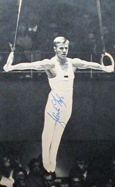

Gunther Lyhs (FRG)
1964 Olympic Team Gold Medalist

Medal Total
Olympic Games: 1 Bronze
Gunther was born on April 20, 1934.
Competition Results
1959
European Championships: 11th AA
1960
FRG Championships: 1st AA
Olympic Games: 7th Team, 26th AA
1961
European Championships: 14th AA
1964
Olympic Games: 3rd Team, 29th AA
1966
FRG-USSR Dual Meet: 2nd Team, 7th AA
World Championships: 41st AA
1967
FRG Championships: 1st AA
This page was created on September
02, 2006.
© Gymn Forum